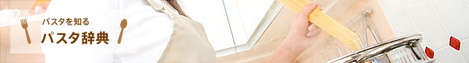
パスタの種類は、現存で500種類以上と言われています。パスタは、地方によって同じ種類でも呼び方が違う場合があり、分類の方法はさまざま。
パスタ協会では、形状の違いを中心にパスタの種類をお伝えします！
ロングパスタとは、長さが25センチ前後のロングにカットした棒状のパスタ。ショートパスタに比べて、形状が単純でストレートな口当たりとなるため、ゆで方や品質の違いによる食感の変化を感じやすいパスタです。
-
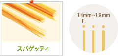
直径1.4〜1.9mm前後、長さ25cm前後の円柱状のロングパスタ。
パスタの中でもっともポピュラーです。
太いタイプのスパゲッティは濃厚なソースによく合い、細いタイプのスパゲッティは軽いソースで調理して食べるのに適しています。
-
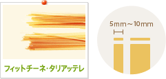
-
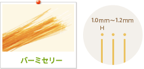
-
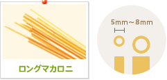
-
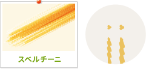
ショートパスタは文字通り、ロングパスタに対して短くカットしたパスタで、種類は非常に多く、形状を楽しむパスタでもあります。食べ方は、ロングパスタ同様に各種のソースをかけたり、和えて食べたりと幅広い食べ方ができます。
-
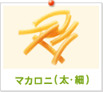
円筒状（穴あき）の直径2〜5mm、円周部の肉厚1mm前後のショートパスタ。
日本ではもっともポピュラーなショートパスタです。日本ではサラダやグラタンに調理する場合が多く、濃いめのソースとよく合います。 -
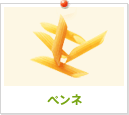
円筒状のショートパスタの両端をペン先のように斜めにカットしたショートパスタ。
両端が斜めにカットされていることにより、ソースが筒の中に入り安く味がしみこみやすいのが特徴です。 -
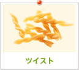
縄状によられた形状のショートパスタ。
日本国内ではサラダに調理されることが多いが、海外では、ソースとともに、または野菜、魚介類、オリーブオイルで調理して食べることが多いパスタです。 -
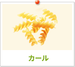
紡錘状で、ひれが螺旋状によじれた形状のショートパスタ。
ドレッシングやマヨネーズが絡まりやすい形状のため、サラダによく合います。 -
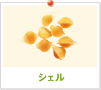
貝の形をしたショートパスタ。
表面に筋が入り、幅10〜20mmのものが一般的です。大型のものは詰め物をして調理することもできます。
- 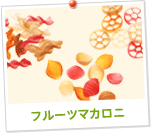
- 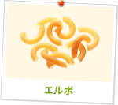
- 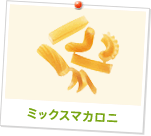
- 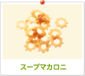
- 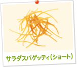